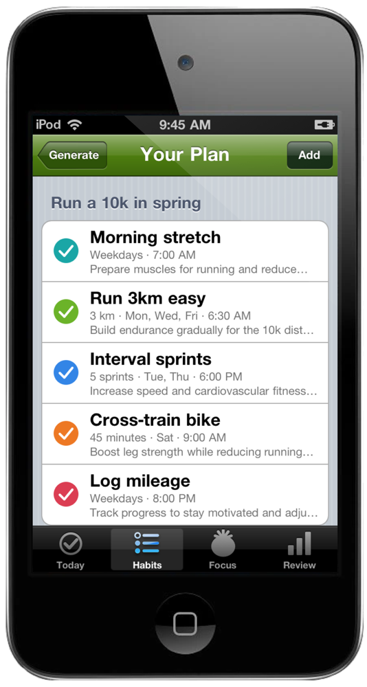
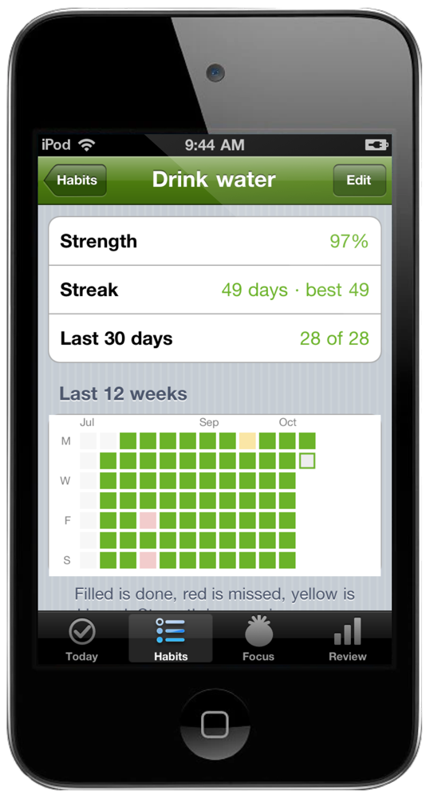
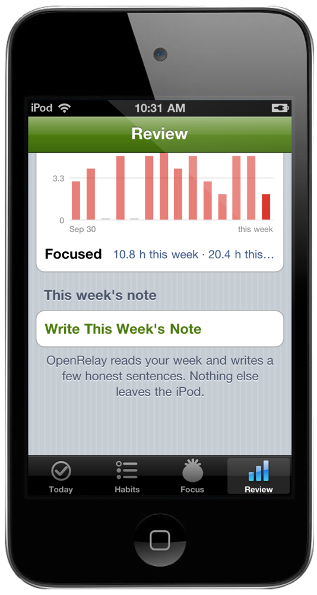
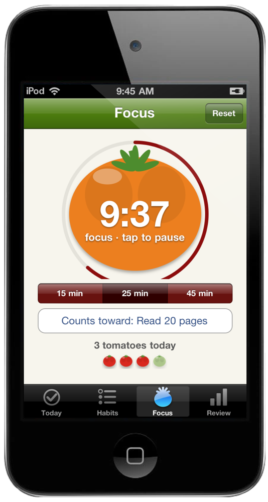
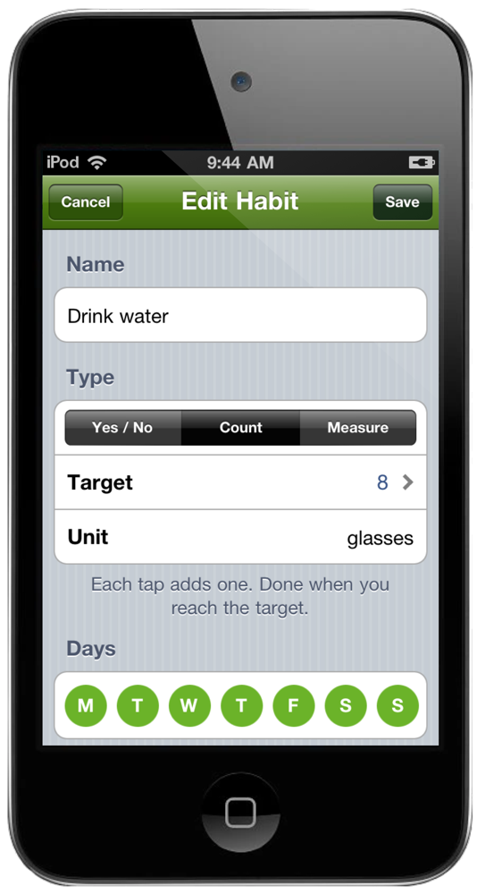

Small things. Every day.
Leather, lined paper, a red margin. Check them off. Watch them add up.


Type what you want, like "run a 10k in spring" or "less phone at night". OpenRelay turns it into a handful of small daily habits with targets, days and reminder times. Keep the ones you like.

A wall calendar with a red X on every day you did it, twelve weeks at a glance. Every habit has a strength score that forgives a bad day instead of resetting you to zero, plus your streak, your best, and which weekdays you actually do the thing.

How much you did each week and where every habit stands. Then a few honest sentences from OpenRelay about what worked and what to try next.

Tap it and it ripens from green to red as you work. Rings when it's done, even with the iPod asleep, then runs the break. Each finished tomato can count toward a habit, like twenty pages or an hour of deep work. The Review tab keeps a two-week chart of them and your focused hours.

Eight glasses, twenty pages, or just did it. Pick the days, set a reminder, and it rings on the iPod with no Wi-Fi needed.